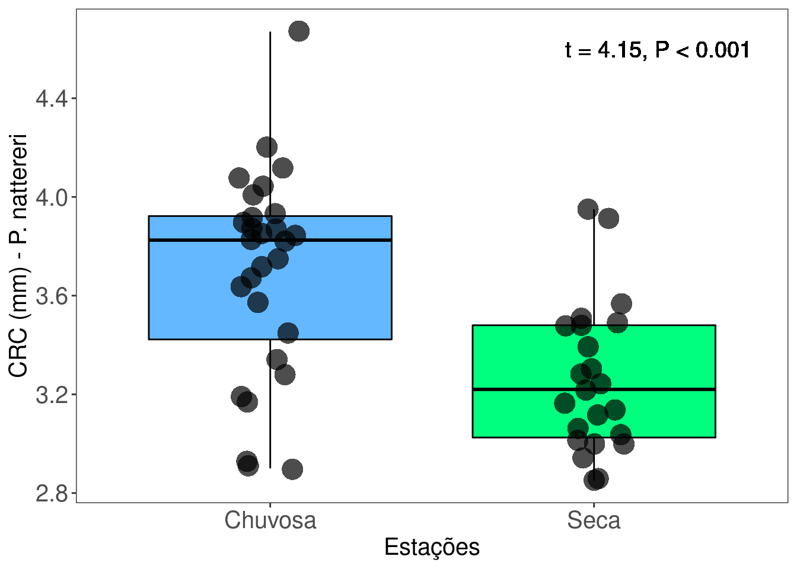
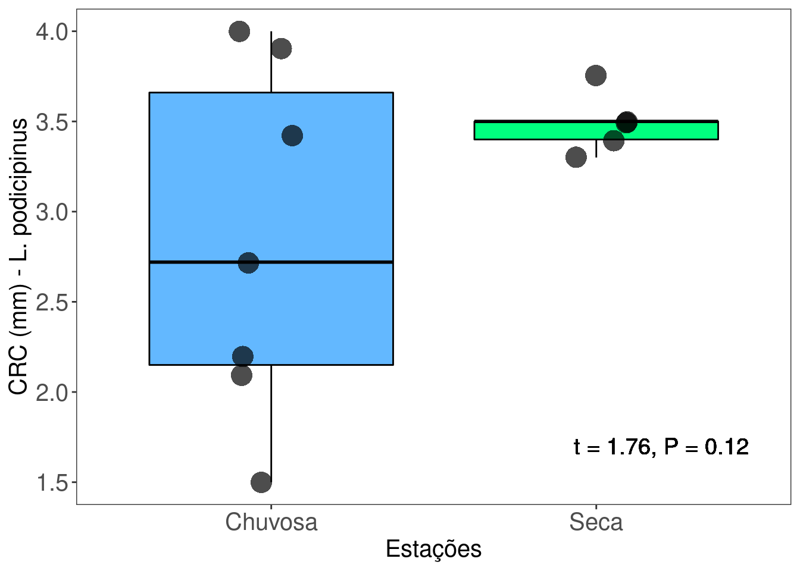
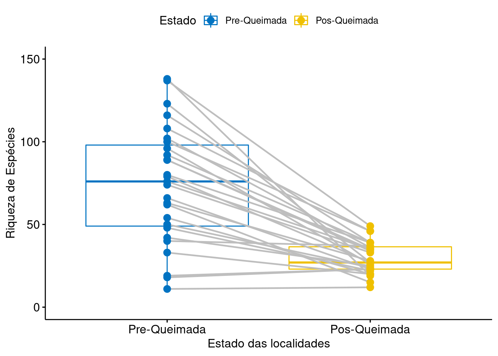
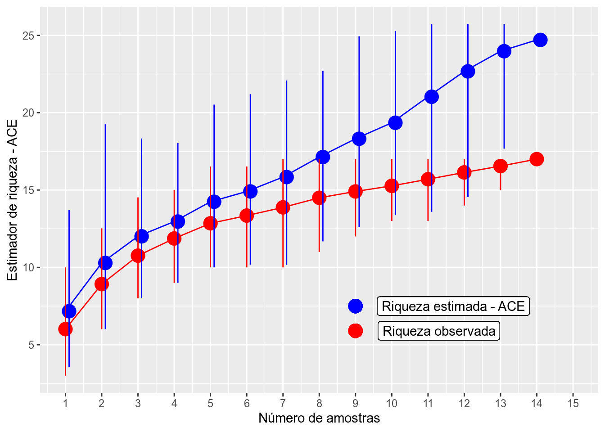

Capítulo 2 Introdução à Análises Multidimensionais
Neste módulo iremos aprender como implementar no R as análises multivariadas mais comumente utilizadas em ecologia de comunidades. Para isso precisaremos dos pacotes vegan,labdsv e ade4. Procuraremos explicar brevemente a lógica por trás de cada teste, a sua aplicação em problemas comumente encontrados em estudos ecológicos, mas não destrinchar detalhadamente como cada método funciona e o seu componente matemático.
Em geral, análises multivariadas têm três principais utilidades: reduzir a dimensionalidade dos dados e encontrar a principal direção de variação dos dados, testar relações entre matrizes, ou ainda encontrar diferenças entre grupos. Apesar dessas análises também serem utilizadas como análises exploratórias e para descrever padrões em estudos ecológicos, a necessidade de se ter hipóteses, ou ao menos expectativas a priori, não pode ser ignorada. Se quiser saber mais sobre aspectos teóricos e filosóficos das análises, sugerimos consultar James & McCulloch (1990). Antes de entrar de cabeça nas análises multivariadas também, sugerimos fortemente o estudo de métodos de amostragem e como fazer boas perguntas. Não vamos nos extender muito nesses tópicos porque eles foram abordados nas aulas disponíveis no YouTube.
Análises multivariadas podem ser divididas, grosseiramente, em dois tipos: agrupamento e ordenação. Análises de agrupamento em geral tentam agrupar objetos (observações) em grupos de maneira que objetos do mesmo grupo sejam mais semelhantes entre si do que objetos de outros grupos. Mais formalmente, o agrupamento de objetos (ou descritores) é uma operação pela qual um conjunto de objetos (ou descritores) é particionado em dois ou mais subconjuntos, usando regras pré-estabelecidas de aglomeração ou divisão (Legendre & Legendre, 2012). Por outro lado, a análise de ordenação é uma operação pela qual os objetos (ou descritores) são posicionados num espaço que contém menos dimensões que o conjunto de dados original; a posição dos objetos ou descritores em relação aos outros também podem ser usadas para agrupá-los.
Vamos começar com análises de agrupamento. Aqui vamos exemplificar dois métodos: uma técnica de agrupamento hierarquica (dendrograma) e outra não-hierarquica (k-means.
2.1 Backgorund da análise
O objetivo da análise de agrupamento é agrupar objetos admitindo que haja um grau de similaridade entre eles. Esta análise pode ser utilizada ainda para classificar uma população em grupos homogêneos de acordo com uma característica de interesse. A grosso modo, uma análise de agrupamento tenta resumir uma grande quantidade de dados e apresentála de maneira fácil de visualizar e entender (em geral, na forma de um dendrograma). No entanto, os resultados da análise podem não refletir necessariamente toda a informação originalmente contida na matriz de dados. Para avaliar o quão bem uma análise de agrupamento representa os dados originais existe uma métrica — o coeficiente de correlação cofenético — o qual discutiremos em detalhes mais adiante.
Antes de considerar algum método de agrupamento, pense porque você esperaria que houvesse uma descontinuidade nos dados; ou ainda, considere se existe algum ganho prático em dividir uma nuvem de objetos contínuos em grupos. O padrão apresentado pelo dendograma depende do protocolo utilizado (método de agrupamento e índice de dissimilaridade); os grupos formados dependem do nível de corte escolhido. O leitor interessado é remetido à duas referências: Legendre & Legendre (2012) e Borcard et al. (2018).
2.2 Exemplo 1:
Pergunta:
Existem grupos de espécies de anfíbios anuros com padrões de ocorrência similar ao longo de poças?
Predições
- 1: Iremos encontrar ao menos dois grupos de espécies: aquelas que ocorrem em poças dentro de floresta vs. aquelas que ocorrem em poças de áreas abertas.
Variáveis
- Variáveis preditoras
- A nossa matriz de dados contém a abundância das espécies nas linhas e locais (poças) nas colunas.
2.2.1 Explicação da análise
A matriz deve conter os objetos a serem agrupados (e.g., espécies) nas linhas e as variáveis (e.g., locais de coleta ou medidas morfológicas) nas colunas. A escolha do método de agrupamento é crítico para a escolha de um coeficiente de associação. É importante compreender as propriedades dos métodos de agrupamento para interpretar corretamente a estrutura ecológica que eles evidenciam (Legendre & Legendre, 2012). De acordo com a classificação de Sneath & Sokal (1973) existem cinco tipos de métodos: 1) seqüenciais ou simultâneos; 2) aglomerativo ou divisivo ;3) monotéticos ou politéticos; 4) hierárquico ou não hierárquicos e 5) probabilístico.
Métodos hierárquicos podem ser divididos naqueles que consideram o centróide ou amédia aritmética entre os grupos. O principal método hierárquico que utiliza a média aritmética é o UPGMA (Agrupamento pelas médias aritméticas não ponderadas), e o principal método que utiliza centróides é a Distância mínima de Ward.
O UPGMA funciona da seguinte forma: a maior similaridade (ou menor distância) identifica os próximos agrupamentos a serem formados. Após esse evento, o método calcula a média aritmética das similaridades ou distâncias entre um objeto e cada um dos membros do grupo ou, no caso de um grupo previamente formado, entre todos os membros dos dois grupos. Todos os objetos recebem pesos iguais no cálculo.
O método de Ward é baseado no critério de quadrados mínimos (OLS), o mesmo utilizado para ajustar um modelo linear. O objetivo é definir os grupos de maneira que a soma de quadrados (i.e. similar ao erro quadrado da ANOVA) dentro dos grupos seja minimizada (Borcard et al. 2018).
Checklist
- Verifique se não há espaço nos nomes das colunas e linhas
- Se os dados forem de abundância, recomenda-se realizar a transformação de Hellinger (Legendre & Gallagher, 2001).
- Se a matriz original contiver muitos valores discrepantes (e.g., uma espécie muito mais ou muito menos abundante que outras) é necessário transformar os dados usando
log1p. - Se as variáveis forem medidas tomadas em diferentes escalas (metros, graus celcius etc), é necessário padronizar cada variável para ter a média 0 e desvio padrão 1. Isso pode ser feito utulizando a função
decostanddo pacotevegan.
2.2.2 Análise
Para começar, vamos primeiro importar os dados e depois calcular a matriz de distância que seja adequada para o tipo de dado que temos (abundância de espécies - dados de contagem)
library(ecodados) # Carrega o arquivo multivar_bocaina
library(vegan)
#sp_compos <- read.table("bocaina.txt", h=TRUE)
sp_compos <- multivar_bocaina
head(sp_compos)## BP4 PP4 PP3 AP1 AP2 PP1 PP2 BP9 PT1 PT2 PT3 BP2 PT5
## Aper 0 3 0 0 2 0 0 0 0 0 0 181 0
## Bahe 859 14 14 0 87 312 624 641 0 0 0 14 0
## Rict 1772 1517 207 573 796 0 0 0 0 0 0 0 0
## Cleuco 0 0 0 0 0 0 0 0 0 29 369 0 84
## Dmic 0 0 6 60 4 0 0 0 2758 319 25 0 329
## Dmin 0 84 344 1045 90 0 0 0 8 0 0 0 0bocaina <- t(sp_compos)#transpondo a matriz para obter a classificação por linhas
distBocaina <- vegdist(bocaina, method="horn")#produz uma matriz de similaridade com o coeficiente de Morisita-Horn
dendro <- hclust(distBocaina, method="average")#produz um agrupamento com a função hclust e o método UPGMAVisualizar os resultados

2.2.2.1 Interpretação dos resultados
Antes de começarmos a interpretar os resultados precisamos verificar que o agrupamento reduziu a dimensionalidade da matiz de forma eficiente, de maneira a não distorcer a informação. Fazemos isso calculando o Coeficiente de correlação cofenética (CCC)
## [1] 0.8819701Um CCC > .7 indica uma boa representação. Portanto, o nosso resultado de 0.8819701 é bastante alto, garantindo que o dendrograma é adequado.
No entanto, para interpretar os resultados precisamos antes definir um nível de corte, que vai nos dizer quantos grupos existem. Há vários métodos para definir grupos, desde os heurísticos aos que utilizam bootstrap. Se quisermos interpretar este dendrograma, podemos por exemplo estabelecer um nível de corte de 50% de distância (ou seja, grupos cujos objetos tenham ao menos 50% de similaridade entre si).
plot(dendro)
k = 4
n = nrow(bocaina)
MidPoint = (dendro$height[n-k] + dendro$height[n-k+1]) / 2
abline(h = MidPoint, lty=2)
Nesse caso teremos a formação de cinco grupos, representados pelos nós que estão abaixo da linha de corte.
2.3 Exemplo 2:
A seguir, vamos utilizar o pacote pvclust que calcula automaticamente o nível de corte de similaridade baseado no Bootstrap de cada nó. Uma desvantagem deste método é que ele somente aceita índices de similaridade da função dist que possui apenas a distância Euclidiana, Manhattan e Canberra. Uma maneira de contornarmos essa limitação é utilizar transformações dos dados disponíveis na função disttransform no pacote BiodiversityR ou o decostand do pacote vegan. Também é possível utilizar a transformação de Box-Cox para dados multivariados, disponível no material suplementar de Legendre & Borcard (2018) aqui
Aqui vamos utilizar a distância de Chord para calcular a matriz de distância. Se transformarmos uma matriz usando a transformação Chord e depois calcularmos a distância Euclidiana, isso equivale à calcular diretamente a distância de Chord:
bocaina_transf <- disttransform(bocaina, "chord")
analise <- pvclust(bocaina_transf, method.hclust="average", method.dist="euclidean") ## Bootstrap (r = 0.46)... Done.
## Bootstrap (r = 0.54)... Done.
## Bootstrap (r = 0.69)... Done.
## Bootstrap (r = 0.77)... Done.
## Bootstrap (r = 0.85)... Done.
## Bootstrap (r = 1.0)... Done.
## Bootstrap (r = 1.08)... Done.
## Bootstrap (r = 1.15)... Done.
## Bootstrap (r = 1.23)... Done.
## Bootstrap (r = 1.38)... Done.
É possível notar que existe um único grupo com BS > 95%. Agora vamos tentar usar a distância de Hellinger:
bocaina_transf2 <- disttransform(bocaina, "hellinger")
analise2 <- pvclust(bocaina_transf2, method.hclust="average", method.dist="euclidean") ## Bootstrap (r = 0.46)... Done.
## Bootstrap (r = 0.54)... Done.
## Bootstrap (r = 0.69)... Done.
## Bootstrap (r = 0.77)... Done.
## Bootstrap (r = 0.85)... Done.
## Bootstrap (r = 1.0)... Done.
## Bootstrap (r = 1.08)... Done.
## Bootstrap (r = 1.15)... Done.
## Bootstrap (r = 1.23)... Done.
## Bootstrap (r = 1.38)... Done.
Notem que se mudarmos o coeficiente de associação, o resultado também muda. Agora temos 1 grupo a mais, composto por Dendropsophus minutus e Scinax duartei que não apareciam antes. Isso se deve ao fato de que a distância de Hellinger dá menos peso para espécies raras do que a Chord.